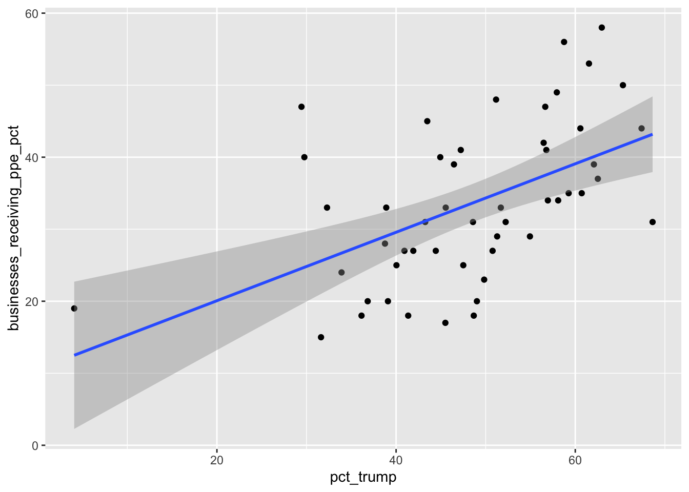
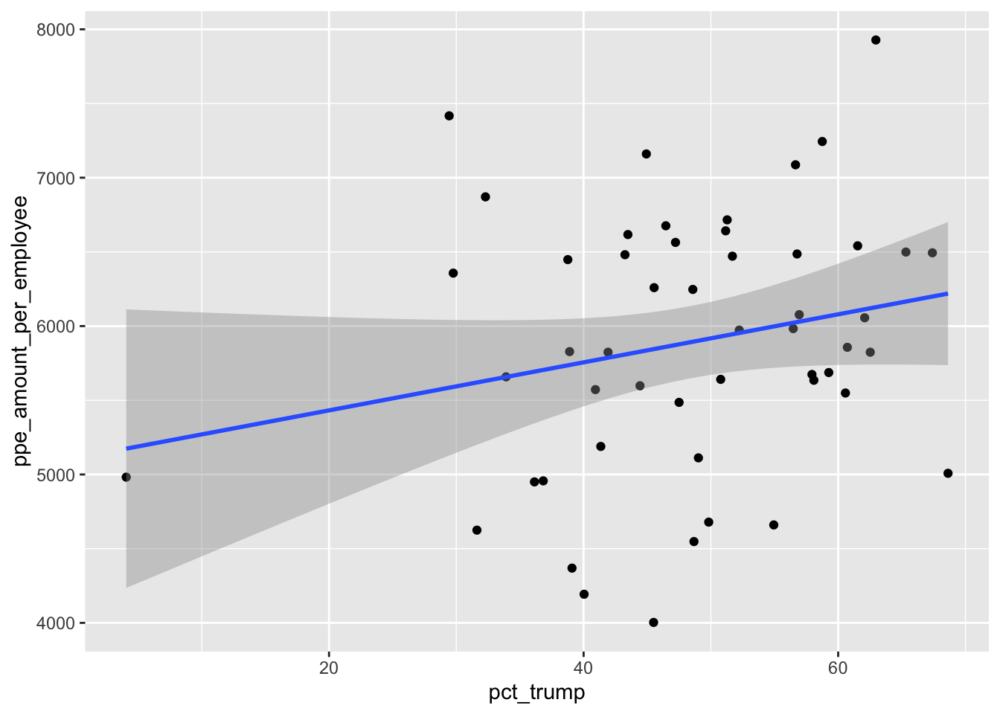

Chapter 25 Linear Regression
Let’s start with this question: did small businesses in states that voted more strongly for Trump get loans at higher rate than small businesses in Democratic states? We can answer it by examining the relationship or correlation between two variables, pct_trump and businesses_receiving_ppe_pct. How much do they move in tandem? Do states with more Trump support see bigger average PPP loans? Do extra Trumpy states get even more? Do super blue states get the least?
Let’s start by plotting them to get a sense of the pattern.
reveal_data %>%
ggplot() +
geom_point(aes(x=pct_trump,y=businesses_receiving_ppe_pct)) +
geom_smooth(aes(x=pct_trump,y=businesses_receiving_ppe_pct), method="lm")## `geom_smooth()` using formula 'y ~ x' It’s a bit messy, but we can see something of a pattern here in the blob of dots. Generally, the dots are moving from the lower left (less Trumpy states that got loans at a lower rate) to upper right (red states that got loans at a higher rate). The blue “line of best fit” shows the general direction of the relationship.
Let’s test another variable, the average amount of money provided by PPP per small business employee in the state.
reveal_data %>%
ggplot() +
geom_point(aes(x=pct_trump,y=ppe_amount_per_employee)) +
geom_smooth(aes(x=pct_trump,y=ppe_amount_per_employee), method="lm")## `geom_smooth()` using formula 'y ~ x' This one is a bit messier. There may be a slight upward slope in this blob of dots, but it’s not quite as apparent. It seems less certain that there’s a relationship between these two variables.
We can be a bit more precise by calculating a statistic called the correlation coefficient, also called “r.” r is a value between 1 and -1. An r of 1 indicates a strong positive correlation.
An increase in air temperature and air conditioning use at home is strongly-positively correlated: the hotter it gets, the more we have to use air conditioning. If we were to plot those two variables, we might not get 1, but we’d get close to it.
An r of -1 indicates a strong negative correlation. An increase in temperature and home heating use is strongly negatively correlated: the hotter it gets, the less heat we use indoors. We might not hit -1, but we’d probably get close to it.
A correlation of 0 indicates no relationship.
All r values will fall somewhere on this scale, and how to interpret them isn’t always straightforward. They’re best used to give general guidance when exploring patterns.
We can calculate r with a function from the corrr package called “correlate().” First, we remove the non-numeric values from our reveal_data (state name and a binary vote_2016 column), then we correlate.
reveal_data %>%
select(-state_name, -vote_2016) %>%
correlate() %>%
select(term, pct_trump)##
## Correlation method: 'pearson'
## Missing treated using: 'pairwise.complete.obs'## # A tibble: 3 x 2
## term pct_trump
## <chr> <dbl>
## 1 pct_trump NA
## 2 businesses_receiving_ppe_pct 0.522
## 3 ppe_amount_per_employee 0.221#glimpse(reveal_data)The table this function produces generally confirms our interpretation of the two graphs above. The relationship between a state’s pct_trump and ppe_amount_per employee is positive, but at .22 (on a scale of -1 to 1), the relationship isn’t particularly strong. That’s why the second graphic above was messier than the first.
The relationship between businesses in a state receiving ppe and the state’s Trump vote is a bit stronger, if still moderate, .52 (on a scale of -1 to 1). Is this finding statistically valid? We can get a general sense of that by calculating the p-value of this correlation, a test of statistical significance. For that, we can use the cor.test function.
cor.test(reveal_data$pct_trump, reveal_data$businesses_receiving_ppe_pct)##
## Pearson's product-moment correlation
##
## data: reveal_data$pct_trump and reveal_data$businesses_receiving_ppe_pct
## t = 4.2818, df = 49, p-value = 0.00008607
## alternative hypothesis: true correlation is not equal to 0
## 95 percent confidence interval:
## 0.2875734 0.6971386
## sample estimates:
## cor
## 0.5218038This output is quite a bit uglier, but for our purposes there are two key pieces of information from this chunk of unfamiliar words. First, it shows the correlation calculated above: r 0.5218. Two, it shows the p-value, which is 0.00008607. That’s very low, as far as p-values go, which indicates that there’s a very slim chance that our finding is a statistical aberration.
Now let’s test the other one, the relationship between the pct_trump and the ppe_amount_per_employee.
cor.test(reveal_data$pct_trump, reveal_data$ppe_amount_per_employee)##
## Pearson's product-moment correlation
##
## data: reveal_data$pct_trump and reveal_data$ppe_amount_per_employee
## t = 1.5872, df = 49, p-value = 0.1189
## alternative hypothesis: true correlation is not equal to 0
## 95 percent confidence interval:
## -0.05798429 0.46818515
## sample estimates:
## cor
## 0.221133Again, it shows our r value of .22, which was weaker. And the p-value here is a much larger 0.12. That indicates a higher chance of our finding being a statistical aberration, high enough that I wouldn’t rely on its validity.
p < .05 is accepted in many scientific disciplines – and by many data journalists – as the cutoff for statistical significance. But there’s heated debate about that level, and some academics question whether p-values should be relied on so heavily.
And to be clear, a low p-value does not prove that we’ve found what we set out to find. There’s nothing on this graph or in the regression model output that proves that Trump’s administration tipped the scales in favor of states that voted for it. It’s entirely possible that there’s some other variable – or variables – not considered here that explain this pattern.
All we know is that we’ve identified a potentially promising pattern, worthy of additional reporting and analysis to flesh out.